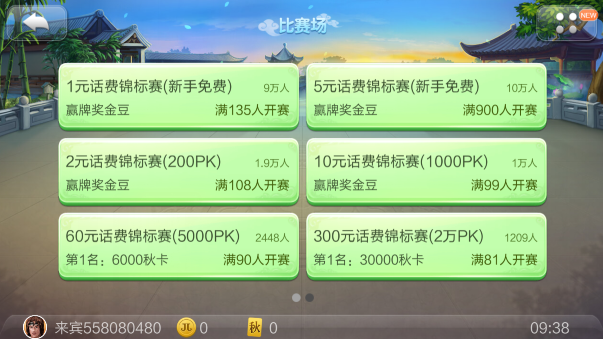
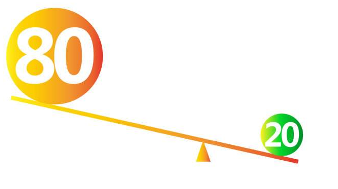

据说，现在打开中国地图，我们能够看到的，每一个人口超过80万的城市，都至少会有2家地方棋牌在竞争。我们在之前的文章中也曾说过，仅湖南一地，棋牌公司就超过1500家。其他类型手游遇冷，资本的涌入，创业的狂热，这些都可以看做是棋牌游戏火爆的原因。那么在行业大佬的观点中，这一现象又代表了什么？让我们顺着整个行业的发展史，看一看新游网络CEO朱江明眼中的棋牌游戏。
棋牌游戏的过去
如果说早年的联众、QQ主打全国性棋牌是属于棋牌游戏的1.0时代，那2.0时代应该是JJ比赛的横空出世。棋牌最初的阶段大概进行了10年的时间，直到JJ比赛出来。JJ现在应该很有名了，同时在线都超过150万，除了腾讯就是它（最大）了，因为它在这个模式做的很好。过去我们大伙都说1000个游戏币往上一押，我们赌一赌都能弄出东西来，但是它没有文化啊，你见过石头剪子布比赛吗？肯定没有。可是JJ就不一样，它发展成一种比赛形式，最高在线的甚至有70万人同时参加一场比赛，这太吓人了。

JJ比赛场
以前我记得德州扑克创造世界基尼斯记录的才10万人在线，这就很了不得了。但是中国斗地主比赛弄一场70万人的比赛是相当于一个小城市那么多人了。过去，我们说你打的比我好，这个东西要经过长期的观察。而比赛最牛逼的地方就在于说，我们几个不再是以输赢来论，而是来进行排名再颁奖，最后决定你比我牛的地方就在于你在比赛当中获得冠军。
如果说你在WSOP（世界扑克系列赛）得过奖，那绝对很牛逼，这是有一个东西可以衡量。所以它到最后发展成为一种比赛的方式。大伙都喜欢花1块钱游戏币进来参加一下比赛，可是平台也赚不了多少钱，最终一个平台能不能赚钱还是靠很多其他模式，但是它就用这么一个手段，给棋牌界带来了革命性的进展。
我私下里跟我们公司人说，这个东西称为棋牌界2.0版本，1.0就是大伙测出来玩玩，2.0版本就是棋牌文化，大伙凑在一起可以比赛。直到2015年、2016年出现了3.0。
棋牌游戏的现状
棋牌3.0的出现用了接近8年的时间。原来的需求是大伙坐在一块玩斗地主，但是你想想100个人斗地主太无聊了，如果我们几个人坐在一起玩玩上海麻将，这个还是很好玩的。所以房卡这种模式才会应运而生。
2016年以前大概有那么一个说法。有100个做棋牌行当的人，能够成功的活下来赚点钱的有两家就不错了。就那两家走的不错，有点名气，而且绑定一些大平台人家愿意给你推。可是现在不一样了，另外98家死掉的都回来了。

棋牌游戏公司的“二八法则”
现在100家做房卡模式的人，只要稍微努力一点，基本上活下来有60%到70%，这很吓人，所以你们听到朋友做房卡成功了，这不稀奇，可以说在70%范围之内都可以活下来。
因为过去做全国性棋牌，对流量的控制、做的好不好都有很大的要求。现在不一样，现在在某一个地区就可以做了。我认识的一个老头在家自己开一个平台，在一个县成绩也很好的，一年赚三五百万问题不大。因为是本地的，配音全是正宗的地方配音，你闲徕还有皮皮想抢我饭碗还不容易呢。所以他活的很滋润。
但是，赚钱谁都想赚，所以有一些同行，他就开始不只是在一起打打麻将、斗地主那么简单了，几个人凑在一起扎金花就不象话了，我对同行们有一个建议，都搞一些好一点正面形象的东西，别搞虚头巴脑的东西，这个东西弄完之后对整个行业是致命的打击。
特别是棋牌行业内也没有一个像联合国这样的组织，来组织这些企业经营。所以对我们在座的可能听到很多声音都是负面的。其实产生恶性事件都是这帮老大爷。我们这些正儿八经要把这个游戏当做文化运营的大平台，都是非常文明化的在做。我们靠我们的技术，靠我们的创新手段，靠我们的组织能力和活动，这种所有的棋牌经验来做这种事情，所以既使我们做房卡这种模式的话，也会比小作坊做的好一些，因为我们想的是长期企业，他们想的是捞点小钱。
我周边好多做实体的，人家跟我说，实体真难做，说一年一百个工人一年能产生200万的利润已经不得了，这公司已经挺大了。但是你想想看，他如果做棋牌，只要三五个人，他就能赚三五百万，这个事情太惊人了，所以导致很多人能做。这个就是目前棋牌行业的现状。
棋牌游戏的未来
我个人对棋牌未来的展望一定是更规范化，一定是所有地方的房卡模式，都会蒸蒸日上，这是第一个。第二个，一定是朝文化方向走的，刚才说了2.0就是朝文化上面走的，3.0是办房卡。棋牌游戏发展最重要的，就是与“赌划清界限。
举个例子，我认识的一个人在淮安做掼蛋，一段时间甚至风靡全江苏。南京市政府还出台一个政策，公务员以后不允许管，凡是吃饭之前都要打两局，打完之后大伙高高兴兴，因为这是我们的国粹，支持我们地区的发展，所以它主打的名片，第一个是小龙虾，第二个就是掼蛋，他希望能把它的文化发展下去。所以我刚才说了，未来的发展一定是规范化，阳光化的。往文化方向走，往体育竞技方向走。
掼蛋已经形成了特定的文化氛围
随着这些东西的发展，棋牌行业未来还是很牛逼的一个行业。并且棋牌玩家的流动性是很低的，我以前认识一个平台，他是做当地的一个游戏，那个游戏非常小众化，就当地人玩，几年来也没有人维护，原来最多10万同时在线，前两天我问还有多少，还有2万呢，都过了十年了。
这个行业，不是说我做一批游戏接下来大量人进来，再大量的人走，完全不用。你只要认真经营下去，棋牌行业的发展基本上是增长的。直到3.0的出现，有一个大的提升，但是接下去又会出现平稳，甚至大公司还要往下掉，因为所有人都要竞争嘛。
所以，未来棋牌行业应该说是非常好的行业，只要我们所有做棋牌游戏的人都承担一些社会责任，这个行业未来国家也会支持，投资者也没有后顾之忧，这才是双赢的事情。这是未来我们的期望，以及我对整个棋牌这个行业政策的一点展望。纹桃科技致力于棋牌游戏开发13年，拥有大量开发运营经验和大批成功案例。
想打造一款迅速盈利的棋牌游戏，欢迎咨询电话热线：18711739336
了解更多棋牌游戏行业信息：在线咨询>>


游戏产品
PRODUCTS

售后服务
SERVICE

技术支持
TECHNOLOGY

运营指导
OPERATING